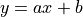

TensorFlow in JavaScript（Huan）¶
Atwood’s Law
“Any application that can be written in JavaScript, will eventually be written in JavaScript.”
– Jeff Atwood, Founder of StackOverflow.com
“JavaScript now works.”
– Paul Graham, YC Founder
TensorFlow.js 簡介¶

TensorFlow.js 是 TensorFlow 的 JavaScript 版本，支持 GPU 硬體加速，可以執行在 Node.js 或瀏覽器環境中。不但支援完全基於 JavaScript 從頭開發、訓練和部署模型，也可以用來運行已有的 Python 版 TensorFlow 模型，或者基於現有的模型進行繼續訓練。

TensorFlow.js 支援 GPU 硬體加速。在 Node.js 環境中，如果有 CUDA 環境支援，或者在瀏覽器環境中，有 WebGL 環境支援，那麼 TensorFlow.js 可以使用硬體進行加速。
微信小程式
微信小程式也提供了官方套件，封裝了TensorFlow.js 函式庫，利用小程式WebGL API 給第三方程式呼叫時提供 GPU 加速。
本章，我們將基於 TensorFlow.js 1.0，向大家簡單地介紹如何基於 ES6 的 JavaScript 進行 TensorFlow.js 的開發，然後提供兩個例子，並基於例子進行詳細的講解和介紹，最終實現使用純 JavaScript 進行 TensorFlow 模型的開發、訓練和部署。
章節程式碼位置
本章中提到的 JavaScript 版 TensorFlow 的相關程式碼，使用說明，和訓練好的模型文件及參數，都可以在作者的 GitHub 上找到。地址： https://github.com/huan/tensorflow-handbook-javascript
瀏覽器中使用 TensorFlow.js 的優勢¶

TensorFlow.js 可以讓我們直接在瀏覽器中載入 TensorFlow，讓用戶立即透過自己的 CPU/GPU 資源進行我們所需要的機器學習運算，更靈活地進行 AI 應用的開發。
瀏覽器中進行機器學習，相對比與伺服器端來講，將擁有以下四大優勢：
不需要安裝軟體或驅動程式（打開瀏覽器即可使用）；
可以透過瀏覽器進行更加方便的人機互動；
可以透過手機瀏覽器，呼叫手機硬體的各種感測器（如：GPS、電子羅盤、加速度傳感器、相機等）；
用戶的資料不需要上傳到伺服器，在本機端即可完成所需操作。
透過這些優勢，TensorFlow.js 將給開發者帶來極高的靈活性。比如在 Google Creative Lab 在 2018 年 7 月發布的 Move Mirror 裡，我們可以在手機上打開瀏覽器，通過手機攝像頭檢測影片中用戶的身體動作姿勢，然後透過對圖片資料庫中類似身體動作姿勢的檢索，給用戶顯示一個最能夠和他當前動作相似的照片。在 Move Mirror 的執行過程中，資料沒有上傳到伺服器，所有的運算都是在手機本體，基於手機的 CPU/GPU 完成的，而這項技術，將使 Servreless 與 AI 應用結合起來成為可能。

Move Mirror 網址：https://experiments.withgoogle.com/move-mirror
Move Mirror 所使用的 PoseNet 網址：https://github.com/tensorflow/tfjs-models/tree/master/posenet
TensorFlow.js 環境配置¶
在瀏覽器中使用 TensorFlow.js¶
在瀏覽器中載入 TensorFlow.js ，最方便的方法是在 HTML 中直接引用 TensorFlow.js 發布的 NPM 包中已經打包安裝好的 JavaScript 程式碼。
<html>
<head>
<script src="http://unpkg.com/@tensorflow/tfjs/dist/tf.min.js"></script>
在 Node.js 中使用 TensorFlow.js¶
伺服器端使用 JavaScript ，首先需要按照 NodeJS.org 官網的說明，完成安裝最新版本的 Node.js 。
然後，完成以下四個步驟即可完成配置：
確認 Node.js 版本（v10 或更新的版本）:
$ node --verion v10.5.0 $ npm --version 6.4.1
建立 TensorFlow.js 項目目錄:
$ mkdir tfjs $ cd tfjs
安裝 TensorFlow.js:
# 初始化項目管理文件 package.json $ npm init -y # 安裝 tfjs 函式庫，純 JavaScript 版本 $ npm install @tensorflow/tfjs # 安裝 tfjs-node 函式庫，C Binding 版本 $ npm install @tensorflow/tfjs-node # 安裝 tfjs-node-gpu 函式庫，支援 CUDA GPU 加速 $ npm install @tensorflow/tfjs-node-gpu
確認 Node.js 和 TensorFlow.js 工作正常:
$ node > require('@tensorflow/tfjs').version { 'tfjs-core': '1.3.1', 'tfjs-data': '1.3.1', 'tfjs-layers': '1.3.1', 'tfjs-converter': '1.3.1', tfjs: '1.3.1' } >
如果你看到了上面的 tfjs-core, tfjs-data, tfjs-layers 和 tfjs-converter 的輸出資訊，那麼就說明環境配置沒有問題了。
然後，在 JavaScript 程式中，通過以下指令，即可導入 TensorFlow.js：
import * as tf from '@tensorflow/tfjs'
console.log(tf.version.tfjs)
// Output: 1.3.1
使用 import 載入 JavaScript 模組
import 是 JavaScript ES6 版本新開始擁有的新特性。粗略可以認為等同於 require。例如：import * as tf from '@tensorflow/tfjs' 和 const tf = require('@tensorflow/tfjs') 對上面的範例程式碼是相同的。希望了解更多的讀者，可以訪問 MDN 文件 。
在微信小程式中使用 TensorFlow.js¶
TensorFlow.js 微信小程式套件封裝了 TensorFlow.js 函式庫，用於提供給第三方程式呼叫。
在使用套件前，首先要在程式管理後台的“設置-第三方服務-套件管理”中添加套件。開發者可登入程式管理後台，通過 appid _wx6afed118d9e81df9_ 查找套件並添加。本套件無需申請，添加後可直接使用。
例子可以看 TFJS Mobilenet: 物體辨識程式
TensorFlow.js 微信小程式教學
為了推動微信小程式中人工智能應用的發展，Google 專門為微信小程式打造了最新 TensorFlow.js 套件，並聯合 Google 認證機器學習專家、微信、騰訊課堂 NEXT 學院，聯合推出了“NEXT學院：TensorFlow.js 遇到程式” 課程，幫助程式開發者帶來更加易於上手和流暢的 TensorFlow.js 開發體驗。
上述課程主要介紹了如何將 TensorFlow.js 套件嵌入到微信小程式中，並基於其進行開發。課程中以一個姿態檢測的模型 PoseNet 作為範例，介紹了 TensorFlow.js 套件導入到微信小程式開發工具中，在項目開發中的配置，功能呼叫，載入模型等方法應用；此外，還介紹了在 Python 環境下訓練好的模型如何轉換並載入到程式中。
本章作者也參與了課程製作，課程中的案例簡單有趣易上手，通過學習，可以快速熟悉 TensorFlow.js 在程式中的開發和應用.有興趣的讀者可以前往 NEXT 學院，進行後續深度學習。
TensorFlow.js 模型部署¶
在瀏覽器中加載 Python 模型¶
一般 TensorFlow 的模型，會被存儲為 SavedModel 格式。這也是 Google 目前推薦的模型保存最佳方式。SavedModel 格式可以通過 tensorflowjs-converter 轉換器轉換為可以直接被 TensorFlow.js 載入的格式，在 JavaScript 語言中進行使用。
安裝
tensorflowjs_converter$ pip install tensorflowjs
tensorflowjs_converter 的使用細節，可以透過 --help 參數查看程式指令:
$ tensorflowjs_converter --help
以下我們以 MobilenetV1 為例，看一下如何對模型文件進行轉換操作，並將可以被 TensorFlow.js 載入的模型文件，存放到
/mobilenet/tfjs_model目錄下。
轉換 SavedModel：將 /mobilenet/saved_model 轉換到 /mobilenet/tfjs_model
tensorflowjs_converter \
--input_format=tf_saved_model \
--output_node_names='MobilenetV1/Predictions/Reshape_1' \
--saved_model_tags=serve \
/mobilenet/saved_model \
/mobilenet/tfjs_model
轉換完成的模型，保存成兩類文件：
model.json：模型架構
group1-shard*of*：模型參數
舉例來說，我們對 MobileNet v2 轉換出來的文件，如下：
/mobilenet/tfjs_model/model.json /mobilenet/tfjs_model/group1-shard1of5 … /mobilenet/tfjs_model/group1-shard5of5
為了加載轉換完成的模型文件，我們需要安裝
tfjs-converter和@tensorflow/tfjs套件:$ npm install @tensorflow/tfjs
然後，我們就可以透過 JavaScript 來載入 TensorFlow 模型了！
import * as tf from '@tensorflow/tfjs'
const MODEL_URL = '/mobilenet/tfjs_model/model.json'
const model = await tf.loadGraphModel(MODEL_URL)
const cat = document.getElementById('cat')
model.execute(tf.browser.fromPixels(cat))
轉換 TFHub 模型
將 TFHub 模型 https://tfhub.dev/google/imagenet/mobilenet_v1_100_224/classification/1 轉換到 /mobilenet/tfjs_model:
tensorflowjs_converter \\
--input_format=tf_hub \\
'https://tfhub.dev/google/imagenet/mobilenet_v1_100_224/classification/1' \\
/mobilenet/tfjs_model
在 Node.js 中執行原生 SavedModel 模型¶
除了透過轉換工具 tfjs-converter 將 TensorFlow SavedModel、TFHub 模型或 Keras 模型轉換為 JavaScript 瀏覽器相容格式之外，如果我們在 Node.js 環境中執行，那麼還可以使用 TensorFlow C++ 的接口，直接執行原生的 SavedModel 模型。
在 TensorFlow.js 中執行原生的 SavedModel 模型非常簡單。我們只需要把預訓練的 TensorFlow 模型存為 SavedModel 格式，並透過 @tensorflow/tfjs-node 或 tfjs-node-gpu 包將模型載入到 Node.js 進行推論即可，無需使用轉換工具 tfjs-converter。
預訓練的 TensorFlow SavedModel 可以透過一行程式碼在 JavaScript 中載入模型並用於推論：
const model = await tf.node.loadSavedModel(path)
const output = model.predict(input)
也可以將多個輸入以陣列或圖的形式提供給模型：
const model1 = await tf.node.loadSavedModel(path1, [tag], signatureKey)
const outputArray = model1.predict([inputTensor1, inputTensor2])
const model2 = await tf.node.loadSavedModel(path2, [tag], signatureKey)
const outputMap = model2.predict({input1: inputTensor1, input2:inputTensor2})
此功能需要 @tensorflow/tfjs-node 版本為 1.3.2 或更高，同時支持 CPU 和 GPU。它支援在 TensorFlow Python 1.x 和 2.0 版本中訓練和匯出的 TensorFlow SavedModel。這項功能帶來的好處除了無需進行任何轉換，原生執行 TensorFlow SavedModel 表示你可以在模型中使用 TensorFlow.js 尚未支援的運算子。這要透過將 SavedModel 作為 TensorFlow 會話載入到 C++ 中進行綁定得以實現。
使用 TensorFlow.js 模型資料庫¶
TensorFlow.js 提供了一系列預訓練好的模型，方便大家快速的給自己的程式，加入人工智慧的能力。
模型庫 GitHub 網址：https://github.com/tensorflow/tfjs-models，其中模型分類包括圖像辨識、語音辨識、人體姿態辨識、物體辨識、文字分類等。
由於這些 API 預設模型文件都儲存在谷歌雲上，在程式內使用模型 API 時要提供 modelUrl 的參數，可以指向谷歌的伺服器。
谷歌雲的base url是 https://cloud.google.com/storage。以 posenet 模型為例：
在瀏覽器中使用 MobileNet 進行攝像頭物體辨識¶
這裡我們透過一個簡單的 HTML 頁面，來呼叫 TensorFlow.js 和與訓練好的 MobileNet ，在用戶的瀏覽器中，通過攝像頭來辨識圖像中的物體是什麼。
我們建立一個 HTML 文件，在表頭資訊中，通過將 NPM 模組轉換為線上可以引用的免費服務
unpkg.com，來載入@tensorflow/tfjs和@tensorflow-models/mobilenet兩個 TFJS 模塊：
<head>
<script src="https://unpkg.com/@tensorflow/tfjs"></script>
<script src="https://unpkg.com/@tensorflow-models/mobilenet"> </script>
</head>
我們宣告三個 HTML 元素：用來顯示視頻的
<video>，用來顯示我們截取特定影像的<img>，和用來顯示檢測文字結果的<p>：
<video width=400 height=300></video>
<p></p>
<img width=400 height=300 />
我們透過 JavaScript ，將對應的 HTML 元素進行初始化：
video,image,status三個變數分別用來對應<video>,<img>,<p>三個 HTML 元素，canvas和ctx用來做從相機獲取影像資料的暫時儲存位置。model將用來儲存我們從網路上載入的 MobileNet模型：
const video = document.querySelector('video')
const image = document.querySelector('img')
const status = document.querySelector("p")
const canvas = document.createElement('canvas')
const ctx = canvas.getContext('2d')
let model
main()用來初始化整個系統，完成載入 MobileNet 模型，將用戶相機的資料綁定<video>這個 HTML 元素上，最後觸發refresh()函數來定期刷新畫面：
async function main () {
status.innerText = "Model loading..."
model = await mobilenet.load()
status.innerText = "Model is loaded!"
const stream = await navigator.mediaDevices.getUserMedia({ video: true })
video.srcObject = stream
await video.play()
canvas.width = video.videoWidth
canvas.height = video.videoHeight
refresh()
}
refresh()函數，用來從影片中取出當前的影像資訊，然後透過 MobileNet 模型進行分類，並將分類結果，顯示在網頁上。然後，透過setTimeout，重複執行自己，來完成持續對影像資料進行處理的功能：
async function refresh(){
ctx.drawImage(video, 0,0)
image.src = canvas.toDataURL('image/png')
await model.load()
const predictions = await model.classify(image)
const className = predictions[0].className
const percentage = Math.floor(100 * predictions[0].probability)
status.innerHTML = percentage + '%' + ' ' + className
setTimeout(refresh, 100)
}
整體功能，只需要一個文件，幾十行 HTML/JavaScript 程式碼即可實現。可以直接在瀏覽器中執行，完整的 HTML 程式碼如下：
<html>
<head>
<script src="https://unpkg.com/@tensorflow/tfjs"></script>
<script src="https://unpkg.com/@tensorflow-models/mobilenet"> </script>
</head>
<video width=400 height=300></video>
<p></p>
<img width=400 height=300 />
<script>
const video = document.querySelector('video')
const image = document.querySelector('img')
const status = document.querySelector("p")
const canvas = document.createElement('canvas')
const ctx = canvas.getContext('2d')
let model
main()
async function main () {
status.innerText = "Model loading..."
model = await mobilenet.load()
status.innerText = "Model is loaded!"
const stream = await navigator.mediaDevices.getUserMedia({ video: true })
video.srcObject = stream
await video.play()
canvas.width = video.videoWidth
canvas.height = video.videoHeight
refresh()
}
async function refresh(){
ctx.drawImage(video, 0,0)
image.src = canvas.toDataURL('image/png')
await model.load()
const predictions = await model.classify(image)
const className = predictions[0].className
const percentage = Math.floor(100 * predictions[0].probability)
status.innerHTML = percentage + '%' + ' ' + className
setTimeout(refresh, 100)
}
</script>
</html>
執行效果截圖如下。可以看到水杯被辨識為 “beer glass” 啤酒杯的機率是 90% ：

TensorFlow.js 模型訓練 *¶
與 TensorFlow Serving 和 TensorFlow Lite 不同，TensorFlow.js 不僅支援模型的部署和推斷，還支援直接在 TensorFlow.js 中進行模型訓練、
在 TensorFlow 基礎章節中，我們已經用 Python 實作過，針對某城市在 2013-2017 年房價預測的任務，透過對該資料進行線性回歸，即使用線性模型  來擬合上述資料，此處 和  是待求的參數。
是待求的參數。
下面我們改用 TensorFlow.js 來實作一個 JavaScript 版本。
首先，我們定義資料，進行基本的正規化操作。
const xsRaw = tf.tensor([2013, 2014, 2015, 2016, 2017])
const ysRaw = tf.tensor([12000, 14000, 15000, 16500, 17500])
// 归一化
const xs = xsRaw.sub(xsRaw.min())
.div(xsRaw.max().sub(xsRaw.min()))
const ys = ysRaw.sub(ysRaw.min())
.div(ysRaw.max().sub(ysRaw.min()))
接下來，我們來計算線性模型中兩個參數 a 和 b 的值。
使用 loss() 計算損失；
使用 optimizer.minimize() 自動更新模型參數。
JavaScript 中的胖箭頭函數（Fat Arrow Function）
從 JavaScript 的 ES6 版本開始，允許使用箭頭函數（=>）來簡化函數的宣告和書寫，類似於 Python 中的 lambda 表達式。例如，以下箭頭函數：
const sum = (a, b) => {
return a + b
}
在效果上等同於如下的傳統函數：
const sum = function (a, b) {
return a + b
}
不過箭頭函數中沒有自己的 this 和 arguments，不可以被當做構造函數（new），也不可以被當做 Generator （無法使用 yield）。感興趣的讀者可以參考 MDN 文件 以了解更多。
TensorFlow.js 中的 dataSync() 系列資料同步函數
它的作用是把 Tensor 資料從 GPU 中取回來，可以理解為與 Python 中的 .numpy() 功能相當，即將資料取回，供本機顯示，或本機計算使用。感興趣的讀者可以參考 TensorFlow.js 文檔 以瞭解更多。
TensorFlow.js 中的 sub() 系列數學計算函數
TensorFlow.js 支援 tf.sub(a, b) 和 a.sub(b) 兩種方法的數學函數呼叫。其效果是相同的，讀者可以根據自己的喜好來選擇。感興趣的讀者可以參考 TensorFlow.js 文檔 以了解更多。
const a = tf.scalar(Math.random()).variable()
const b = tf.scalar(Math.random()).variable()
// y = a * x + b.
const f = (x) => a.mul(x).add(b)
const loss = (pred, label) => pred.sub(label).square().mean()
const learningRate = 1e-3
const optimizer = tf.train.sgd(learningRate)
// 训练模型
for (let i = 0; i < 10000; i++) {
optimizer.minimize(() => loss(f(xs), ys))
}
// 预测
console.log(`a: ${a.dataSync()}, b: ${b.dataSync()}`)
const preds = f(xs).dataSync()
const trues = ys.arraySync()
preds.forEach((pred, i) => {
console.log(`x: ${i}, pred: ${pred.toFixed(2)}, true: ${trues[i].toFixed(2)}`)
})
從下面的輸出範例中我們可以看到，已經擬合得比較接近了。
a: 0.9339302778244019, b: 0.08108722418546677
x: 0, pred: 0.08, true: 0.00
x: 1, pred: 0.31, true: 0.36
x: 2, pred: 0.55, true: 0.55
x: 3, pred: 0.78, true: 0.82
x: 4, pred: 1.02, true: 1.00
可以直接在瀏覽器中執行，完整的 HTML 程式碼如下：
<html>
<head>
<script src="http://unpkg.com/@tensorflow/tfjs/dist/tf.min.js"></script>
<script>
const xsRaw = tf.tensor([2013, 2014, 2015, 2016, 2017])
const ysRaw = tf.tensor([12000, 14000, 15000, 16500, 17500])
// 归一化
const xs = xsRaw.sub(xsRaw.min())
.div(xsRaw.max().sub(xsRaw.min()))
const ys = ysRaw.sub(ysRaw.min())
.div(ysRaw.max().sub(ysRaw.min()))
const a = tf.scalar(Math.random()).variable()
const b = tf.scalar(Math.random()).variable()
// y = a * x + b.
const f = (x) => a.mul(x).add(b)
const loss = (pred, label) => pred.sub(label).square().mean()
const learningRate = 1e-3
const optimizer = tf.train.sgd(learningRate)
// 训练模型
for (let i = 0; i < 10000; i++) {
optimizer.minimize(() => loss(f(xs), ys))
}
// 预测
console.log(`a: ${a.dataSync()}, b: ${b.dataSync()}`)
const preds = f(xs).dataSync()
const trues = ys.arraySync()
preds.forEach((pred, i) => {
console.log(`x: ${i}, pred: ${pred.toFixed(2)}, true: ${trues[i].toFixed(2)}`)
})
</script>
</head>
</html>
TensorFlow.js 性能對比¶
關於 TensorFlow.js 的性能，Google 官方做了一份基於 MobileNet 的評測，可以作為參考。具體評測是基於 MobileNet 的 TensorFlow 模型，將其 JavaScript 版本和 Python 版本各執行兩百次，其評測結論如下。
手機瀏覽器性能：（單位：毫秒 ms）

TensorFlow.js 在手機瀏覽器中執行一次推論：
在 iPhoneX 上需要時間為 22ms
在 Pixel3 上需要時間為 100ms
與 TensorFlow Lite 程式碼基準相比，手機瀏覽器中的 TensorFlow.js 在 IPhoneX 上的執行時間為基準的1.2倍，在 Pixel3 上執行的時間為基準的 1.8 倍。
瀏覽器性能：（單位：毫秒 ms）
在瀏覽器中，TensorFlow.js 可以使用 WebGL 進行硬體加速，將 GPU 資源使用起來。
{kind=link}
TensorFlow.js 在瀏覽器中執行一次推論：
在 CPU 上需要時間為 97ms
在 GPU (WebGL) 上需要時間為 10ms
與 Python 程式碼基準相比，瀏覽器中的 TensorFlow.js 在 CPU 上的執行時間為基準的 1.7 倍，在 GPU (WebGL) 上執行的時間為基準的 3.8 倍。
Node.js 性能：
在 Node.js 中，TensorFlow.js 可以用 JavaScript 載入轉換後模型，或使用 TensorFlow 的 C++ Binding ，分別接近和超越了 Python 的性能。

TensorFlow.js 在 Node.js 執行一次推論：
在 CPU 上執行原生模型時間為 19.6ms
在 GPU (CUDA) 上執行原生模型時間為 7.68ms
與 Python 程式碼基準相比，Node.js 的 TensorFlow.js 在 CPU 和 GPU 上的執行時間都比基準快 4% 。